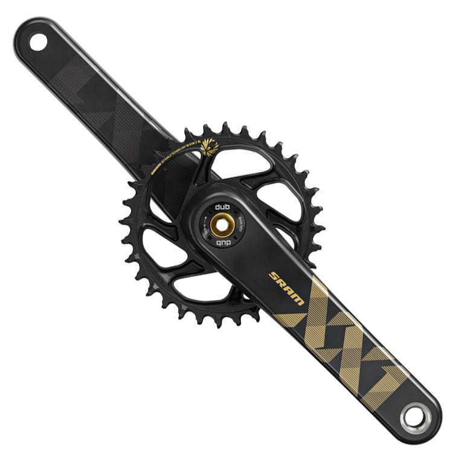

A chainwheel, also known as a chainring, is a circular metal wheel with teeth around its perimeter. It is the component in a bicycle's drivetrain that connects the crank to the bicycle chain, and it is usually located at the front of the bike near the pedals.